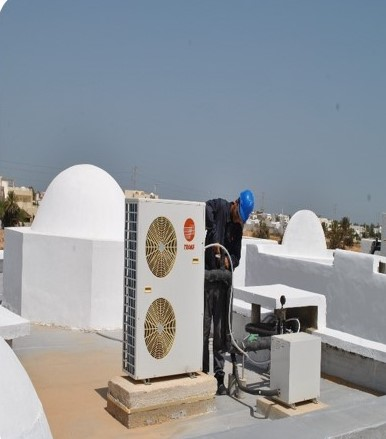
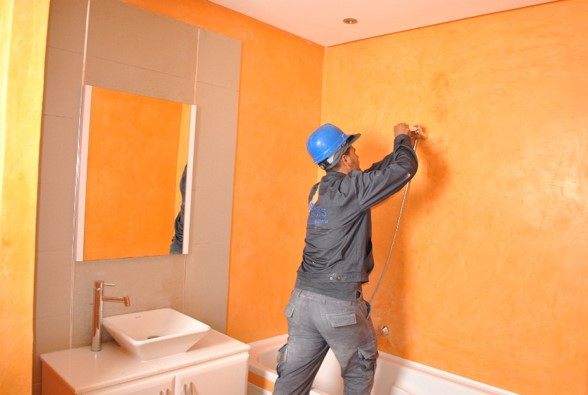
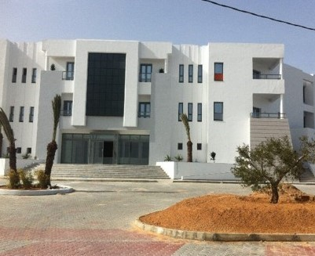
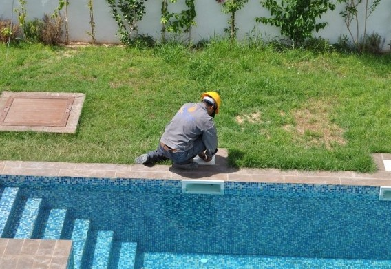
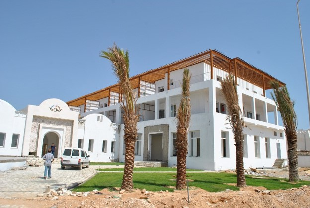

Quelques références

En Climatisation et traitement d'air :
- Climatisation des blocs opérationnels C.Hopital.U Sahloul Sousse.
- Travaux de climatisation des salles informatique du batiment CIATI au CNI Centre National de l'informatique
- Réonovation des installations de climatisation de l'Hotel Odyssee à Zarzis
- Climatisation du laboratoire national d'hygiène à Ben Arous Tunis (Ministère de la santé)
- Climatisation des blocs opératoires à l'EPS CHARLES NICOLLE à Tunis
- Réonovation des installations du traitement d'air des salles d'opérations et plomberie sanitaire à l'institut d'Ophtalmologie du Tunis (Ministère de la santé)

En Lot Fluides et chauffage central :
- Lot fluides de la polyclinique ARIJ à Midoun Jerba.
- Lot fluides de la polyclinique Erriaya EL Hassana à Benguerdene
- Lot fluides de la clinique méditerranéenne de santé Soukra à Tunis
- Travaux de réonovation des chaudières et des centrales du traitement d'air au siège social de TSB à Tunis
- Lot fluides de la polyclinique les berges du lac à Tunis
- Réonovation des installations de chauffage central des différents batiments à la cite administrative à la Ministère de l'Agriculture à Tunis
- Réonovation des installations de chauffage central du district de la sureté nationale du Tunis (Ministère de l'intérieur).


